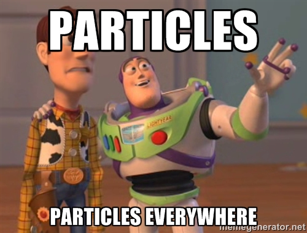
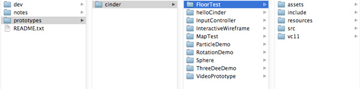

A most excellent journey to the depths and back :: led by @trippedout
An interactive media player for the XBone that could allow users to find extra content throughout the series. First demo to use a potential upcoming Halo series (faked with Foward Unto Dawn).
The Mill - excellent motion graphics and art direction;
absolute shit UX and borderline austistic when it comes to digital/interactive.
SLOC Directory SLOC-by-Language (Sorted)
20877 src cpp=20877
Total Physical Source Lines of Code (SLOC) = 20,877
Development Effort Estimate, Person-Years (Person-Months) = 4.86 (58.33)
(Basic COCOMO model, Person-Months = 2.4 * (KSLOC**1.05))
Schedule Estimate, Years (Months) = 0.98 (11.72)
(Basic COCOMO model, Months = 2.5 * (person-months**0.38))
Estimated Average Number of Developers (Effort/Schedule) = 4.98
Total Estimated Cost to Develop = $ 656,588
(average salary = $56,286/year, overhead = 2.40).


#pragma once
#include "Displayobject.h"
typedef boost::shared_ptr< DisplayObjectContainer > DisplayObjectContainerRef;
class DisplayObjectContainer : public DisplayObject
{
protected:
typedef std::vector< DisplayObjectRef >::iterator ChildIterator;
std::vector< DisplayObjectRef > children;
public:
DisplayObjectContainer(void);
virtual ~DisplayObjectContainer(void);
virtual void update(float dt);
virtual void render();
virtual void draw();
// responsible for adding/removing children to the child vector; also virtual so that
// inputView can override with its selectable items
virtual void addChild(DisplayObjectRef object);
virtual void removeChild(DisplayObjectRef object);
bool contains(DisplayObjectRef object);
virtual void setPosition( ci::Vec3f val );
virtual void setRotation( ci::Vec3f val );
virtual void setScale( ci::Vec3f val );
virtual void setCenter( ci::Vec3f val );
virtual void setSize( ci::Vec3f val );
virtual void setAlpha(float val);
virtual void setInternalAlpha();
//TODO: addChildAt(index), getChildAt(index), etc..
};
]]>
ARGOS on github (only the proper stuff)
this presentation (probably useless to you html/js/css nerds)
Thanks!